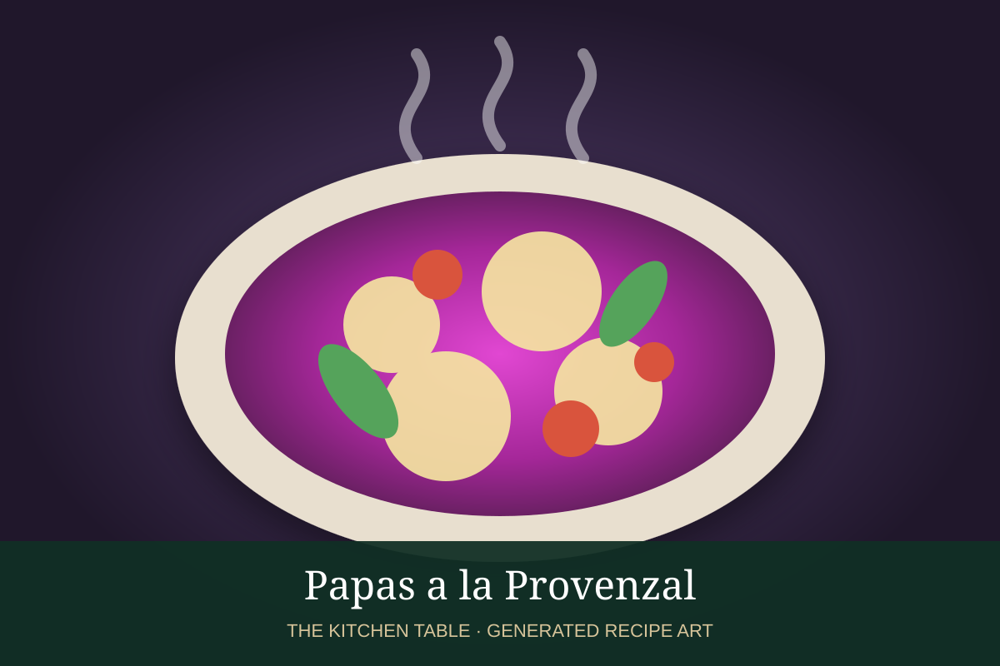

← Back to all recipes
SIDE · ARGENTINIAN
Papas a la Provenzal
Golden potatoes tossed with the classic Argentine provenzal combination of garlic and fresh parsley.
40 minServes 4

Representative photo: Valenzuela400 / Wikimedia Commons, CC BY-SA 4.0.
Ingredients
- 2 lb small potatoes, halved or quartered
- 3 tbsp olive oil
- 4 garlic cloves, very finely minced
- ½ cup chopped flat-leaf parsley
- 1 tsp kosher salt
- Freshly ground black pepper
- 1 tbsp fresh lemon juice, optional
Preparation
- Heat the oven to 425°F. Toss the potatoes with 2 tablespoons olive oil, salt, and pepper.
- Roast cut-side down until browned and tender, 30–35 minutes.
- Mix the garlic, parsley, remaining olive oil, and lemon juice, if using.
- Toss the hot potatoes immediately with the garlic-parsley mixture.
- Taste for salt and serve hot.